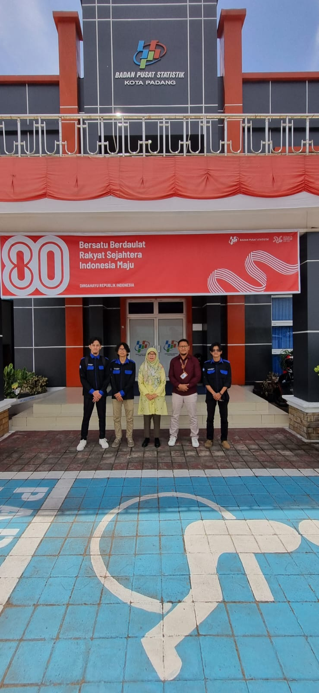
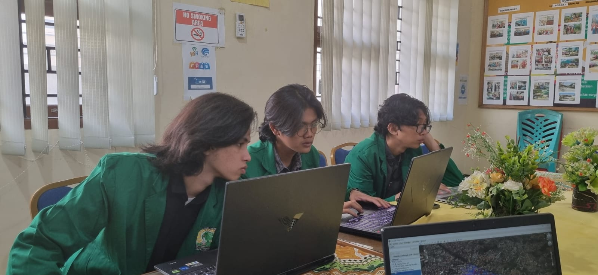
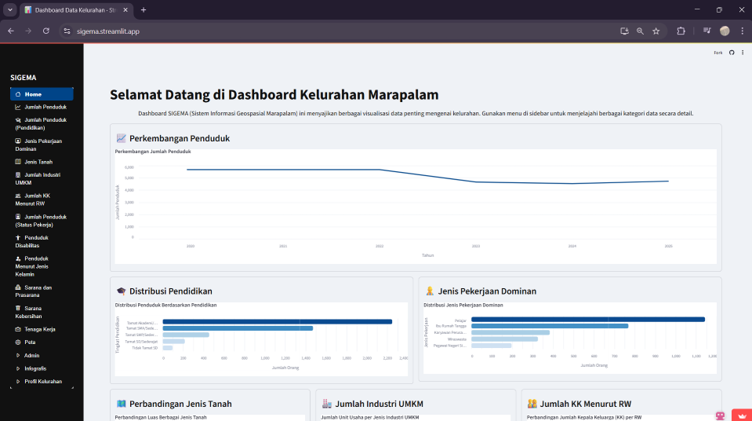
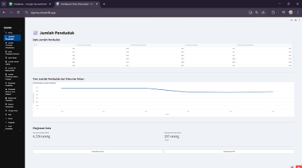
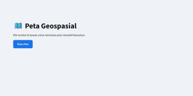
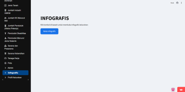

Data Science, Machine Learning & Pengembangan Aplikasi
Lulusan S1 Informatika (S.Kom) Universitas Andalas dengan ketertarikan pada Data Science, Machine Learning, dan pengembangan aplikasi. Berpengalaman dalam pengolahan dan analisis data, visualisasi data, serta pengembangan dan evaluasi model Machine Learning berbasis CNN menggunakan Python.
Saya lulusan S1 Informatika Universitas Andalas dengan ketertarikan pada bidang Data Science, Machine Learning, dan pengembangan aplikasi. Saya memiliki pengalaman dalam pengolahan dan analisis data, visualisasi data, serta pengembangan dan evaluasi model Machine Learning berbasis CNN menggunakan Python.
Saya juga memiliki pengalaman magang di BPS Kota Padang dalam pengembangan website SIGEMA, serta bekerja part-time sebagai barista selama perkuliahan. Pengalaman tersebut membentuk kemampuan problem solving, analytical thinking, komunikasi, kerja sama tim, dan manajemen waktu. Saya antusias untuk terus belajar dan mengembangkan karier di bidang Teknologi Informasi.
Kumpulan teknologi dan metode yang sering saya gunakan dalam pengembangan model AI dan aplikasi data.
Dari implementasi dashboard di instansi pemerintah hingga riset Tugas Akhir di bidang deep learning.
Merancang dan membangun sistem informasi berbasis web untuk visualisasi data demografi dan infrastruktur kelurahan menggunakan Python dan Streamlit. Sistem ini mengintegrasikan Google Sheets sebagai database real-time untuk memfasilitasi pembaruan data secara dinamis guna mendukung Program Desa Cantik.






Mengembangkan dan mengevaluasi model Convolutional Neural Network berarsitektur ResNet50V2 untuk mengklasifikasikan kualitas pakan sapi berbahan dasar sagu ke dalam tiga kategori (baik, sedang, buruk) dari citra digital, menggantikan penilaian manual yang rawan subjektivitas. Menggunakan 1.556 citra data primer yang di-preprocessing (resize 224×224 px, normalisasi piksel) dan dievaluasi dengan Stratified 5-Fold Cross Validation (80% training/validasi, 20% pengujian). Skenario terbaik mencapai akurasi validasi 99,36%, dengan akurasi pengujian 99,04%, precision 99,03%, recall 99,04%, dan F1-score 99,03%.
Menganalisis kebutuhan dan merancang sistem website visualisasi data, lalu mengembangkan website SIGEMA menggunakan Python dan Streamlit dengan Google Sheets sebagai database real-time. Melakukan preprocessing, validasi, dan visualisasi data statistik, serta mendesain dashboard interaktif dan fitur analisis data. Melakukan pengujian, deployment, maintenance, dan evaluasi sistem bersama stakeholder, serta berkolaborasi dengan tim BPS dalam pengembangan solusi berbasis data untuk Program Desa Cantik.
Mengoordinasikan dan mengawasi kinerja seluruh divisi HMIF, mengelola komunikasi dan koordinasi internal, serta memantau progres program kerja dan memberikan solusi atas kendala pelaksanaan. Berperan sebagai mediator penyelesaian konflik organisasi, mewakili Ketua Himpunan dalam rapat dan kegiatan resmi, serta mendukung pengambilan keputusan dan evaluasi kinerja organisasi.
Mengawasi dan mengevaluasi kinerja Badan Eksekutif Mahasiswa HMIF, menyusun dan menetapkan peraturan organisasi, serta menyelenggarakan rapat pleno, sidang, dan forum musyawarah. Mengevaluasi laporan pertanggungjawaban pengurus, mengawal pelaksanaan AD/ART, menjaga transparansi dan akuntabilitas, serta menjadi mediator dan penghubung komunikasi antara mahasiswa dan pengurus organisasi.
Menyiapkan dan menyajikan minuman kopi, non-kopi, serta makanan ringan sesuai standar operasional. Mengoperasikan mesin espresso dan grinder, mengelola stok bahan baku, serta menangani pesanan dan transaksi pembayaran menggunakan sistem kasir (POS).
Memimpin operasional bar dan mengoordinasikan tim setiap hari, menjaga konsistensi kualitas produk, mengelola stok bahan baku, serta melatih karyawan baru mengenai prosedur kerja dan standar pelayanan.
Membantu perakitan dan pemasangan panel listrik (MCB, MCCB, kontaktor, relay, terminal), pengkabelan, serta pengujian kontinuitas dan tegangan sebelum panel digunakan, sesuai protokol Keselamatan dan Kesehatan Kerja (K3).